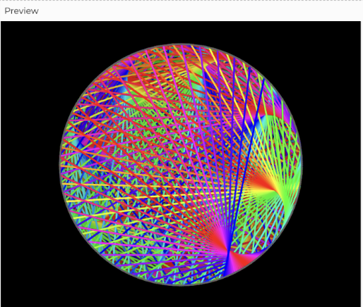
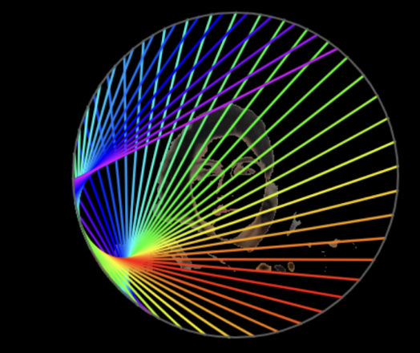
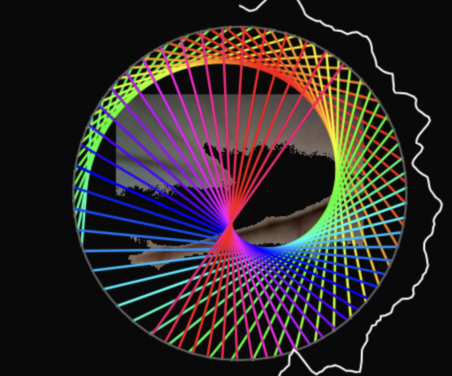

Experiment 4 - Images, Video, & Sound Art
Imitate
After a couple of minutes of searching for starting examples I had been drawn to a “Laser Pattern Maker” by Richard Bourne. We have been seeing multiple examples of laser effects in class and with doing a laser background for a previous project, I want to improve on my use of lasers.
I still wanted to create a unique visual and audio experience for the viewer. I wanted them to feel connected to the piece, so what better way than to have the viewer be a part of the experience. The plan is to incorporate the user's camera to capture a live video and add this laser effect to their live video. To capture the viewer audibly, music would play in the background with the background having an audio visualizer that is producing sound waves and particles. I was inspired by the short video “Code and Audio Visualizer” by Colorful Coding
Integrate
The first thing I wanted to do was get an understanding of how the “Laser Pattern Make” sketch worked. The setup was pretty simple, but I needed to get a better understanding of how the random lines were generated. After some time I understood that the function was just taking the lines drawn from the ellipses created by the draw function and checking the bounds of the lines. Once a line would hit the decided boundary it would change its direction. With this understanding I went ahead and recreated this in my sketch file. I adjusted the canvas size so I would be able to see the full effect of this laser show.
Following this I wanted to get audio added into the sketch. This was a pretty simple feature to add. I looked up references from the p5.js example library to accomplish this.
Innovate
My next couple of steps would be a bit more hard to implement. I wanted to add an audio visualizer effect to the circular laser show. I also wanted to add the usage of the user’s camera so they could see their face inside the laser show. I found more documentation on adding the implementation of the camera usage, so I decided to tackle this problem first. I was able to successfully capture the user’s webcam image and display it in the background of the lasers. I wasn’t fully pleased with how this turned out. I felt like the camera needed an effect to itself as the image looked disappointed without any effect within itself. I wanted to reduce how much of the background the user would see in the camera. After searching up different camera filter effects I came across “Webcam background removal” by Lisajamhoury.
This allowed me to capture the user’s face and not their background. It also reduced the color coming in from the webcam so the focus can go back to the colorful lasers. With the webcam capture completed my next step was to implement the audio visualizer. My first step was to follow the video tutorial by Colorful Coding and fine tune it to work with my current sketch. Following the tutorial I did come across an issue with the creation of the audio waveforms affecting the lasers. In the picture you can see that the lasers were no longer filling up the whole circle. Instead it was rotating a small amount of laser lines around the circle. The issue was I changed the angle mode from radians to degrees. To resolve this I told the program that for the lasers during each update they must be in radians. However, the waveform would update with an angle mode of degrees. These two line additions allowed to fix the results.
Now with this fixed, I went ahead and finished creating the radial audio visualizer. I was able to complete a full circle around the lasers.
I wanted to also add particles that floated away from the waveforms. However, I wanted to have the velocity of each particle move depending on the amplitude of the song. With the particles added my next step was figuring this out. After reading through the p5.js library I went ahead and figured out that there was already a function that gets the range of a frequency level. I created an If statement to check the music frequency range was within the threshold. If the music was then it would increase the velocity of the particles. The original sample song I created didn’t have a strong enough bass, so I uploaded a royalty free song from Pixabay. The song is called “Electronic Future Beats” by QubeSounds. This allowed me to see the particle velocity movement much clearer.
Reflection
This experiment wasn’t too difficult to complete. With countless examples on using the webcam as a live video this was pretty easy to set up. Previously doing an experiment with lasers I had a pretty good starting point. Once reading over the p5.js library documentation it was also simple to get music loading into the experiment. The most difficult part for me was getting the visual representation of the audio’s sound waves. It took a good amount of time researching to find an example that I was satisfied with. I also wasn’t sure how I wanted the sound to be represented.
Initially I thought about making the laser beams change in stroke width to represent sound. However this became overwhelming to look at. My next idea was to do a horizontal sound wave across the whole background, but this looked very plain. I wanted something that was unique. I remembered watching many times on videos how people would represent sound waves radially. This is what inspired me to pursue this route of representation.
Once again I wanted this art piece to have some form of representation of who I am as a person. I love creating content that emerges the user into the experience. To achieve this I had the user be digitally represented in the center of the screen.